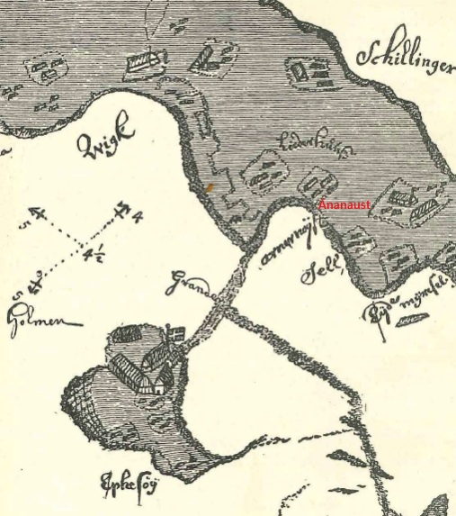
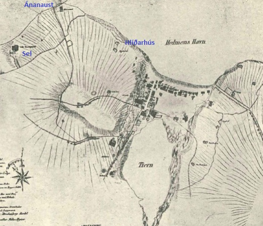

1715 – 1801
Ánanaust var upphaflega naust frá Vík, Reykjavík, en síðar getið sem hjáleigu frá Hlíðarhúsum í manntali 1703. Þegar kirkjan á Helgafelli fékk Hlíðarhús að gjöf árið 1723 fylgdi hjáleigan Ánanaust með. Bæjarstjórn Reykjavíkur keypti Hlíðarhús árið 1858.
Óljóst er hversu langt aftur má rekja byggð í Ánanaustum. Á 18. og 19. öld var oftast þríbýlt í Ánanaustum og voru bæirnir fimm um tíma. Síðasti torfbærinn stóð fram til 1930, en síðasti bærinn sem tilheyrði Ánanaustum var rifinn árið 1940 vegna gatnaframkvæmda. Gatan Ánanaust, sem varðveitir nafn bæjanna, fékk nafn sitt árið 1948.
Björn Jónsson skipstjóri bjó og gerði út frá Ánanaustum, en útræði var ávallt mikið þaðan enda skilyrði góð til sjósóknar. Ánanaustabæirnir stóðu þar sem nú er vestasti hluti Mýrargötu.
Uppdrátturinn eftir Hoffgard frá 1715 sýnir að þrír bæir tilheyrðu Ánanaustum á þeim tíma.

